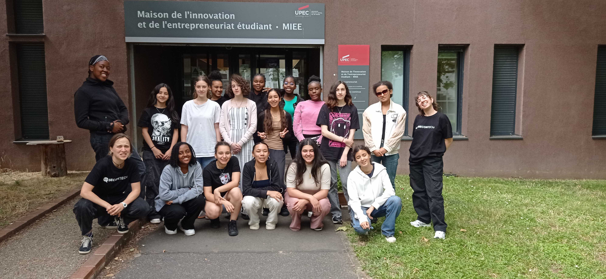

4 semaine gratuites dans une promo de 15 filles pour decouvrire l'univers du numerique et l'informatique.code ton propresite web,decouvrire l'IA et la robotique, filme et monte des vidéos, rencontre des femmes inspirantes, deviens super à l’aise devant les autres, visite des entreprises de la Tech, découvre les métiers du futur !
8 programmes JUMP IN TECH ont lieu à l’échelle nationale (Paris, Créteil, Carrières-sous-Poissy, Cergy, Lyon, Nantes, Marseille) en présentiel et en ligne ! Le programme JUMP IN TECH est 100% gratuit et se déroule pendant les vacances d’été, du 08 juillet au 02 août 2024 en présentiel.
Pour le distanciel :
TOUTES les filles curieuses et motivées entre 14 et 17 ans, sans aucun prérequis. Tu veux découvrir le digital, tu te questionnes sur tes choix d’orientation, tu veux rejoindre une communauté de filles qui s’entraident et tu es dispo cet été ? Ce programme est fait pour toi !